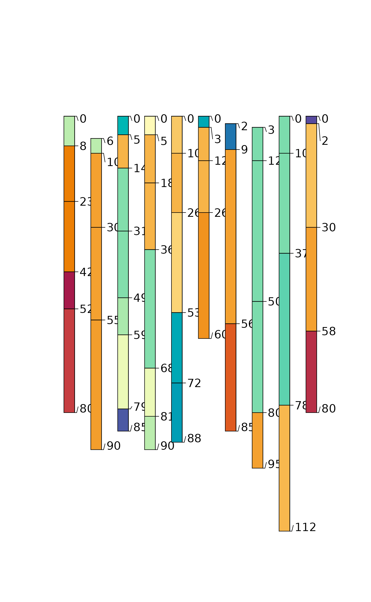

Merge Munsell Hue, Value, Chroma converted to sRGB & CIELAB into a SoilProfileCollection
Source:R/munsell2rgb.R
munsell2spc-SoilProfileCollection-method.RdConvert Munsell hue, value and chroma into sRGB (rgb_R, rgb_G, rgb_B) and CIELAB (lab_L, lab_A, lab_B) color coordinates using munsell2rgb. The converted values are stored in the horizons() slot unless as.spc is FALSE, in which case the results are combined with profile and horizon ID columns and returned as the data.frame subclass used by the SPC.
Usage
# S4 method for class 'SoilProfileCollection'
munsell2spc(
object,
hue = "hue",
value = "value",
chroma = "chroma",
.data = NULL,
as.spc = TRUE
)Arguments
- object
A SoilProfileCollection
- hue
Column name containing numeric hue values. Default:
"hue"- value
Column name containing numeric value values. Default:
"value"- chroma
Column name containing numeric chroma values. Default:
"chroma"- .data
Optional: a character vector of equal length to number of horizons (containing Munsell notation), or a column name in the horizon data OR a data.frame containing three columns (names specified in
hue,value,chroma)- as.spc
Return a data.frame-like object with ID columns?
Examples
data(sp3)
depths(sp3) <- id ~ top + bottom
# inspect input data
horizons(sp3)[,c("hue","value","chroma")]
#> hue value chroma
#> 1 10YR 5 3
#> 2 10YR 6 4
#> 3 10YR 6 4
#> 4 7.5YR 6 6
#> 5 7.5YR 6 5
#> 6 10YR 5 3
#> 7 10YR 6 3
#> 8 10YR 6 3
#> 9 2.5Y 6 4
#> 10 5YR 4 4
#> 11 5YR 5 6
#> 12 5YR 4 6
#> 13 5YR 4 6
#> 14 2.5YR 4 6
#> 15 10YR 5 4
#> 16 2.5YR 3 6
#> 17 7.5YR 5 4
#> 18 5YR 5 6
#> 19 5YR 5 6
#> 20 5YR 4 6
#> 21 10YR 5 4
#> 22 10YR 5 3
#> 23 7.5YR 5 6
#> 24 5YR 5 6
#> 25 5YR 5 5
#> 26 7.5YR 4 4
#> 27 2.5YR 4 3
#> 28 7.5YR 4 4
#> 29 5YR 5 6
#> 30 5YR 5 6
#> 31 5YR 5 7
#> 32 10YR 4 3
#> 33 10YR 6 3
#> 34 10YR 6 5
#> 35 10YR 5 2
#> 36 10YR 5 2
#> 37 10YR 5 2
#> 38 10YR 6 3
#> 39 10YR 5 2
#> 40 10YR 5 2
#> 41 2.5Y 5 2
#> 42 2.5Y 6 3
#> 43 10YR 4 2
#> 44 10YR 6 2
#> 45 10YR 6 3
#> 46 2.5Y 7 2
# do color conversions to sRGB and LAB, join into horizon data
sp3 <- munsell2spc(sp3)
# plot rgb "R" coordinate by horizon
plot(sp3, color = "rgb_R")

# plot lab "A" coordinate by horizon
plot(sp3, color = "lab_A")
 # note that `lab_A` values do not exactly match the original `A` values
# this is because `lab_A` was computed from the (field determined) Munsell color notation,
# while `A` was directly measured in the lab by colorimeter
plot(sp3$A, sp3$lab_A, xlab = 'Measured', ylab = 'Converted from Field Observed Munsell')
# note that `lab_A` values do not exactly match the original `A` values
# this is because `lab_A` was computed from the (field determined) Munsell color notation,
# while `A` was directly measured in the lab by colorimeter
plot(sp3$A, sp3$lab_A, xlab = 'Measured', ylab = 'Converted from Field Observed Munsell')